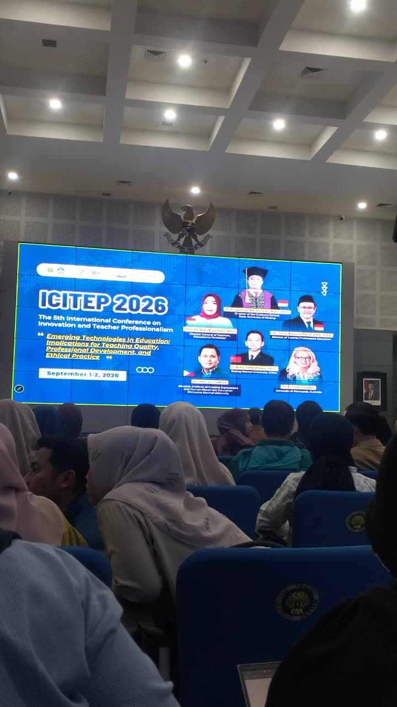
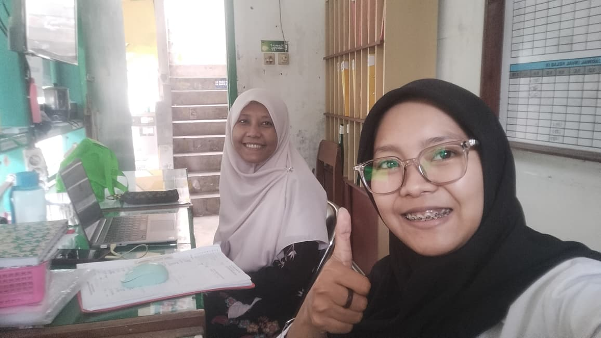
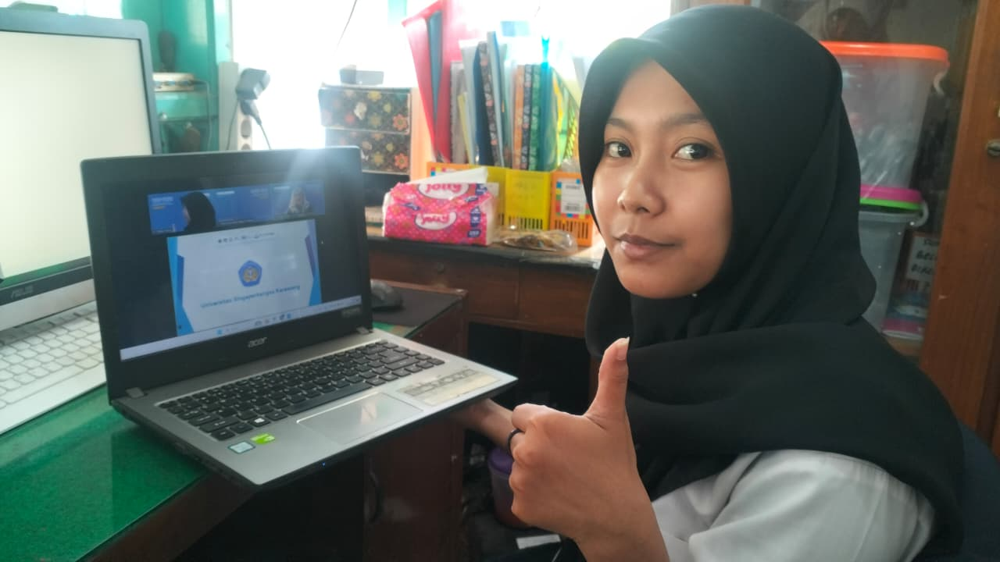
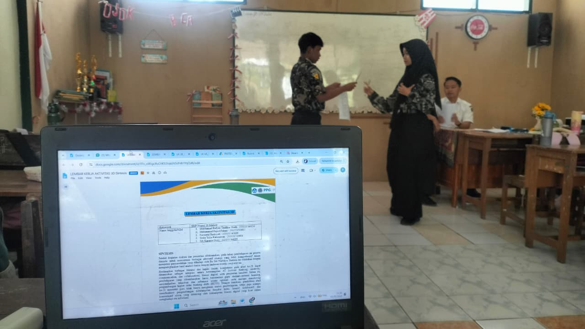

Deskripsi Kegiatan Mingguan
PPL PPG Calon Guru Pendidikan Teknik Informatika Gelombang 1 Tahun 2026
SMPN 18 Malang
Minggu 7
Nama : Siska Yulia Rahmawati
NIM: 253153743918
Hari/Tanggal |
Deskripsi Kegiatan |
Refleksi |
Senin/31 Agustus 2026 |
Upacara Membuat RPP untuk pertemuan minggu depan |
Mengikuti upacara, dan menyusun RPP untuk pertemuan minggu depan mengajarkan saya tentang pentingnya persiapan dan pengamatan dalam pembelajaran. Saya belajar merancang rencana mengajar yang sesuai dengan karakter murid. Pengalaman ini memotivasi saya untuk lebih siap dan profesional dalam mengajar. |
Selasa/1 September 2026 |
Izin tidak masuk PPL karena ada undangan seminar ICITEP di kampus Universitas Negeri Malang |
|
Rabu/2 September 2026 |
Berjaga di ruang piket Inval kelas 8G Zoom ICITEP DAY 2 |
Setiap kegiatan memberikan pengalaman dan pelajaran tersendiri; berjaga di ruang piket mengajarkan saya tentang pentingnya ketelitian dalam administrasi dan kesiapsiagaan menghadapi berbagai situasi, sementara mengisi kekosongan di kelas 8G menantang kemampuan saya dalam mengelola kelas dan beradaptasi dengan cepat. Puncaknya, materi dari ICITEP DAY 2 membuka wawasan baru mengenai teknologi pendidikan yang bisa saya aplikasikan untuk meningkatkan kualitas pembelajaran. Secara keseluruhan, kombinasi antara tugas operasional, interaksi langsung dengan murid, dan pengembangan profesional ini sangat memperkaya pengalaman saya dan mengingatkan bahwa menjadi seorang pendidik menuntut fleksibilitas serta semangat belajar yang terus-menerus. Saya bersyukur atas semua pengalaman ini dan akan menjadikannya sebagai bekal untuk terus berkembang ke depannya. |
Malang, 2 September 2026 |
|
Guru Pamong
Ratna Agustyasari, S.Pd. NIP. 19890802 2019022001 |
Mahasiswa PPG Calon Guru Gelombang 1
Siska Yulia Rahmawati NIM 253153743918 |
Kepala Sekolah SMP Negeri 18 Malang
Mohammad Amrozi Hamidi, S.Pd., M.M NIP. 19681102 199203 1005 |
Lampiran
Tanggal |
Dokumentasi |
|
31/8/26 |
||
1/9/26 |
 zin tidak masuk PPL karena ada undangan seminar ICITEP di kampus Universitas Negeri Malang |
|
2/9/26 |
 Berjaga di ruang piket |
 Zoom ICITEP |
 Inval kelas 8G |